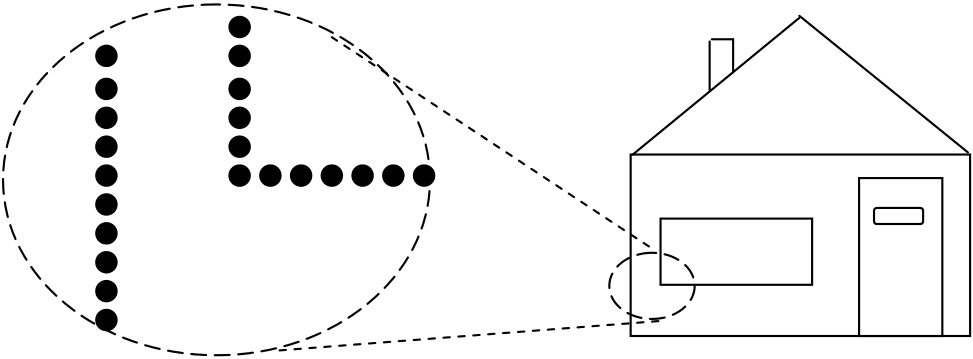
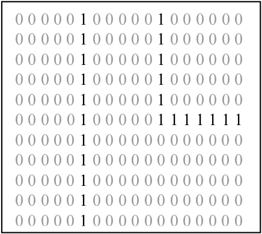
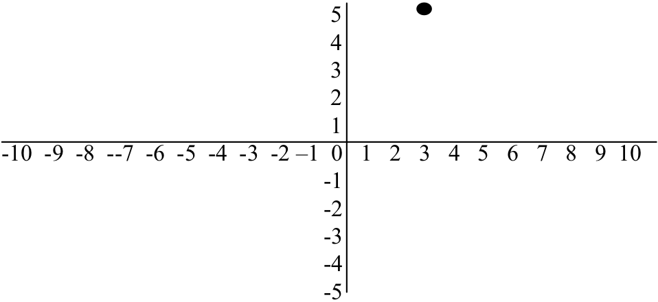
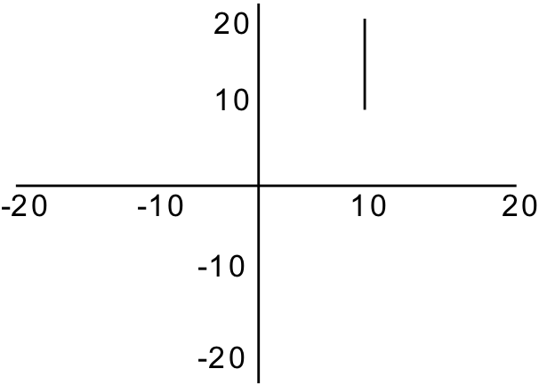
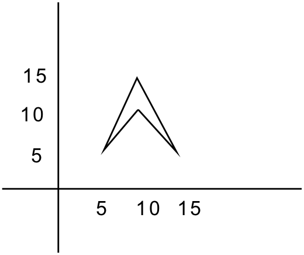
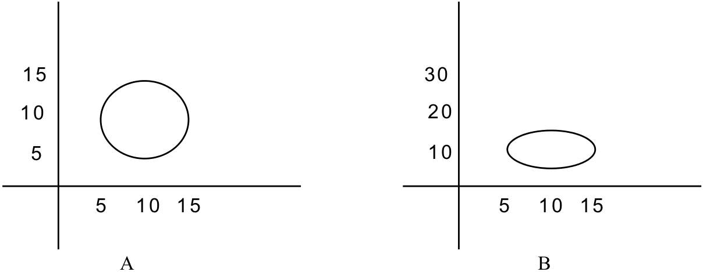

The graphical images generated by PC’s, game consoles, and other computers are composed of hundreds of thousands of individual points of light. Each of these points of light is called a pixel. The word “pixel” is derived from the phrase “picture element”. A Pixel is the smallest individually addressable location of a graphics screen. If you get very close to a computer display, or better yet use a magnifying glass, you can clearly see the individual pixels making up an image. However, when looked at from a normal viewing distance, our eyes cannot distinguish the individual pixels – they visually merge to form an image.
(a) Image close-up showing individual pixels (b) A monochrome bitmapped image
(c) A portion of the image frame buffer corresponding to the close-up of part (a)
Pixels, bitmapped images, and frame buffers
, parts (a) and (b), illustrate the relationship between pixels and graphical images. Part (a) shows a close-up of a small portion of an image. The full image, of a house, is shown in part (b). In the close-up the individual pixels that make up part of the side of the house and a corner of the widow can be clearly seen. In the overall image these pixels merge to form lines.
As we know, computers store digital data, ones and zeros. So the question naturally arises as to how PCs, game consoles, and other computers are able to store and display images. To render an image, a computer first places a digital version of the image into the frame buffer of the machine’s graphical subsystem (usually a graphics card or chip). The contents of the frame buffer are then used by the graphics hardware to generate the displayed image.
A frame buffer is just a block of high-speed computer memory that holds a “digital version” of an image. This version of the image consists of one’s and zero’s. For simple monochrome (black and white) images, the frame buffer holds a “1” for pixels that are on and a “0” for pixels that are off. This arrangement is illustrated in , part (c), which shows the portion of the frame buffer that corresponds to the image close-up of part (a). As you can see, everywhere a pixel is active in the close-up, the frame buffer holds a “1”. The frame buffer holds a “0” for every inactive pixel. The main function of the graphics hardware is to scan the frame buffer, activating the display pixels corresponding to the locations of the frame buffer that contain “1”s. Because of this correspondence between the bits (0’s and 1’s) in the frame buffer and pixels on the screen, graphical images are sometimes referred to as bitmapped images.
Of course, in the real world, things are a bit more complicated. In order to create realistic graphical images, pixels must have color and intensity. So, instead of containing a “1” for pixels that are on and a “0” for pixels that are off, the frame buffer will contain numbers that represent each pixel’s color and intensity.
Most systems represent color using the RGB system. In RGB, there are three numbers per pixel – one number represents the intensity of the color “red”, another number represents the intensity of the color “green”, and a third number represents the intensity of the color “blue”. Typically, graphics systems can represent 256 individual shades of each of the primary colors: red, green, and blue – giving a combined “color palette” of over 1.6 million distinct colors.
The resolution of a graphical image is the number of individual dots, or pixels, that form the image. The size of the frame buffer and speed of the graphics hardware, generally determine an image’s resolution. Resolution is stated in terms of two numbers: the first specifies the number of pixels per line (the horizontal resolution), and the second specifies the number of lines per image (the vertical resolution).
Image resolution on game consoles is generally limited to 640 by 480 – that is, 640 pixels per line, with 480 lines per image. This resolution is the maximum that can be handled by most of the television sets to which game consoles are attached. Thus, image resolution on console games is unlikely to improve until high-definition television sets become more popular.[1] PC monitors, on the other hand, are capable of displaying higher resolution images. Common graphics modes include 800 by 600, 1024 by 768, and 1280 by 1024.
Even at a relatively low resolution of 640 by 480, a single image is composed of 307,200 pixels. When you consider that gamers typically demand 60 frames (or images) per second for smooth animation, you can begin to get a feel for how hard the graphics hardware must work to provide a realistic gaming experience.
At this point you may be wondering why the graphics standards are designed to be wider than they are tall. The reason for this is that most computer monitors and television screens are not square – they are constructed with an aspect ratio of 4 by 3. These displays are four units wide for every three units tall. Most graphics standards reflect this 4 by 3 ratio in order to make it easy to map images directly onto standard display devices without distortion.
Now that we have some feel for how the graphics hardware generates an on-screen image from an internal digital image, we can begin to examine how these digital images are defined or drawn. In order to do so, some background on Cartesian coordinate systems is first presented.
All graphical systems, at some level, use Cartesian coordinate systems to specify graphical images. You probably remember having studied coordinate systems in your math classes. They are often covered when discussing how to plot mathematical functions. A Cartesian coordinate system consists of two labeled axes at right angles to one another. Both are essentially number lines. One axis is drawn horizontally and is labeled X. The other axis is drawn vertically and is labeled Y. The point at which the two axes meet is called the origin. A picture of a Cartesian coordinate system with X labeled from -10 to +10 and Y labeled from -5 to +5 is given in . You can see that the two axes divide space into four separate regions, or quadrants. The upper right hand quadrant is known as quadrant one. In quadrant one, X and Y values are always positive.
A Cartesian coordinate system showing a point a location (3,5)
Points in a Cartesian coordinate system are defined using two distances, the horizontal, X, distance from the vertical axis, and the vertical, Y, distance from the horizontal axis. The two distances are written in parentheses with the X distance always appearing first, followed by the Y distance. A comma separates the two distances. So, for example, the point (3,5) is located at X= 3, Y = 5; three horizontal units over from the Y-axis and five vertical units up from the X-axis. This point is plotted in . Note that the origin of the coordinate system is located at (0,0) since it is zero horizontal units and zero vertical units from the two axes.
We usually define at least two separate Cartesian coordinate systems in computer graphics: the screen coordinate system and the world coordinate system. The screen coordinate system is used by the graphics hardware to actually produce the image. Screen coordinates are, therefore, physically dependent on the underlying graphics hardware, and cannot be changed by the programmer.[2] In screen coordinates, both X any Y coordinates are specified using positive integer values. The lengths of the two axes depend on the image resolution supported by the underlying graphics hardware. In an 800 by 600 system, legal X values would range from 0 to 799 and legal Y values from 0 to 599.
Somewhat unexpectedly, the origin point (0,0) of most screen coordinate systems is located in the upper left hand corner of the screen – with X values increasing from left to right and Y values increasing from top to bottom – rather than in the lower left hand corner with X increasing from left to right and Y from bottom to top. In other words, at the hardware level, the Y-axis is often “inverted” from its normal orientation. This detail is mentioned for the sake of completeness. It can usually be safely ignored since this quirk is hidden from all but the lowest levels of graphics software.
The world coordinate system is the system that is actually used by a program for drawing an image. World coordinates are not dependent on hardware and may be easily changed by the programmer. One reason for having world and screen coordinate systems is so that images can be created that do not depend on particular graphics hardware systems. Computer graphics hardware changes rapidly. A top-of-the-line graphics system today will probably be considered primitive in just a few years. For this reason it is important that graphical images not be tied to any one piece of hardware. Flexibility is another reason for having programmer definable world coordinate systems. The coordinate system used by one application may not be appropriate for a different application. For example, a floor plan of a house might be drawn in feet, while a highway map might use miles.
It is important to understand that the world coordinate system used by one program is totally separate from the world coordinate systems used by other programs. In modern
A line segment from (10,10) to (10, 20)
PC operating systems, every running program normally operates in its own resizable window. The operating system handles the positioning, moving, and resizing of these windows. The programs running within these windows each possess their own world coordinate system and are often not even aware of the size or on-screen position of the window in which they run. The operating system translates all drawing instructions issued by programs using their internal world coordinate systems to the machine’s physical screen coordinate system, so that their images may be rendered by the graphics hardware.
Now that we have an understanding of coordinate systems, we can turn our attention to the graphical primitives used to create images. Graphical primitives are the lowest-level graphical objects that can be specified by a computer program. Throughout the remainder of this chapter, we will concentrate on four graphical primitives: points, lines, polygons, and circles.
A point is the simplest graphical primitive. As we saw above, points are specified using a pair of coordinates, X and Y. Pixels and points are very similar. Both essentially appear as dots on the screen, and may have attributes such as color and intensity. However, since individual pixels are so very, very small, points are sometimes drawn as small clusters of adjacent pixels in order to make the point large enough to be clearly visible from a normal viewing distance.
In computer graphics, the word line is used to refer to a straight line segment. Lines are specified using two points: a starting point and an ending point. Like points and pixels, lines may have other characteristics such as color. illustrates a line from point (10, 10) to point (10, 20).
Another standard graphics primitive is the polygon. A polygon is a closed, multi-sided figure, such as a triangle, rectangle, or square. Polygons are usually thought of as a collection of connected line segments. To ensure that the lines are connected, the ending
A four-sided polygon
point of each line segment must be the starting point of the next line segment. Polygons are always closed figures because the end point of the last line segment must be the start point of the first line segment. Some definitions of polygon also require that none of the line segments cross, but we will not enforce that restriction in this text. A four-sided polygon is shown in .
The final graphics primitive presented here is the circle. Circles may be defined by specifying a center point and a radius. A circle is the collection of points that are exactly the radius distance away from the center point. For example, (a) illustrates a circle with a center point at (10, 10) and a radius of 5. Note that in computer graphics a circle will not always appear round but may instead take on the shape of an ellipse. (b) shows what the same circle looks like when the world coordinates are defined as (0, 0) (15,30). The object in (b) still meets our definition of a circle, since all of the points are exactly 5 units away from the center. It looks the way it does because we have compressed space in the vertical, Y, dimension.
Two views of the same circle
Footnotes
[1] Do not take this statement to mean that the look of game consoles will not improve beyond the current generation of X-box, Playstation II, and Game Cube machines. The level of visual realism supported by a machine depends on many factors other than raw image resolution, such as polygons rendered per second, complexity of supported shading and lighting models, and frames per second. Such topics are discussed in most upper division computer graphics courses.
[2] Actually, most PC graphics cards support multiple screen resolution modes, such as 800 by 600 and 1024 by 768. These modes can be selected under software control – but once a screen resolution mode is selected it affects all programs running on that machine.